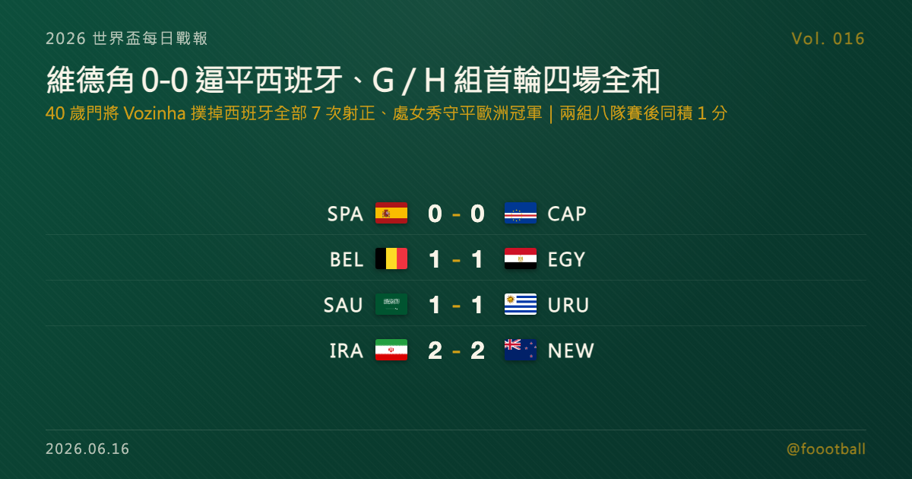

維德角 0-0 守平西班牙、40 歲門將撲掉全部 7 次射正：G／H 組首輪四場全和、八隊同分
2026 世界盃 6/15 G、H 兩組首輪四場全部和局：維德角靠 40 歲門將 Vozinha 撲掉西班牙全部 7 次射正、處女秀 0-0 逼平歐洲冠軍；比利時、沙烏地、伊朗也各被對手逼平，兩組八隊賽後全部 1 分並列。

2026 世界盃每日戰報 Vol. 016
§1 即時比分戰報
2026 世界盃小組賽推進到 G、H 兩組首輪，台北時間從凌晨到上午一連四場——而這一夜的關鍵字是「和局」：四場比賽全部握手言和，沒有任何一隊先聲奪人。最受矚目的一幕出現在亞特蘭大——首度踏上世界盃的維德角，靠 40 歲門將 Vozinha 撲掉西班牙全場 7 次射正，0-0 逼平歐洲冠軍，拿下隊史世界盃第一分。比利時、沙烏地阿拉伯、伊朗同樣各被對手逼平，G、H 兩組八隊賽後全部 1 分、平起平坐。以下是本輪四場賽果：
| 賽事 | 比分 | 場館 | 焦點 |
|---|---|---|---|
| 🇪🇸 西班牙 — 🇨🇻 維德角 | 0 - 0 | 亞特蘭大 Mercedes-Benz Stadium（賽事期間亦稱 Atlanta Stadium） | 40 歲門將 Vozinha 撲掉西班牙全部 7 次射正、獲全場最佳；維德角處女秀 0-0 逼平歐洲冠軍 |
| 🇧🇪 比利時 — 🇪🇬 埃及 | 1 - 1 | 西雅圖 Lumen Field（賽事期間亦稱 Seattle Stadium） | Emam Ashour 19'（Salah 助攻）；Mohamed Hany 66' 烏龍扳平（Lukaku 替補上場不到半分鐘逼出） |
| 🇸🇦 沙烏地阿拉伯 — 🇺🇾 烏拉圭 | 1 - 1 | 邁阿密 Hard Rock Stadium（賽事期間亦稱 Miami Stadium） | Al-Amri 41' 為沙烏地先馳得點、Maxi Araújo 80' 扳平；沙烏地門將 Al-Owais 多次撲救 |
| 🇮🇷 伊朗 — 🇳🇿 紐西蘭 | 2 - 2 | 洛杉磯 SoFi Stadium（賽事期間亦稱 Los Angeles Stadium） | Elijah Just 梅開二度（7'、54'）；伊朗 Rezaeian 32'、Mohebbi 64' 兩度追平 |
四場分屬 G、H 兩組，兩組首輪到此打完。罕見的是，兩組四場比賽最後全化為平手——積分榜也因此開出一張「全員並列」的少見開局，§2 是現在的形勢。
§2 排行榜區：G／H 組首輪形勢
H 組（首輪打完）——兩場都是平手，四隊各拿 1 分。沙烏地阿拉伯與烏拉圭因為各進 1 球、在淨勝球同為 0 的情況下憑進球數暫列前段，西班牙與維德角的 0-0 則讓兩隊緊隨其後：
| # | 球隊 | 賽 | 勝 | 和 | 負 | 進 | 失 | 差 | 分 |
|---|---|---|---|---|---|---|---|---|---|
| 1 | 🇸🇦 沙烏地阿拉伯 | 1 | 0 | 1 | 0 | 1 | 1 | 0 | 1 |
| 1 | 🇺🇾 烏拉圭 | 1 | 0 | 1 | 0 | 1 | 1 | 0 | 1 |
| 3 | 🇪🇸 西班牙 | 1 | 0 | 1 | 0 | 0 | 0 | 0 | 1 |
| 3 | 🇨🇻 維德角 | 1 | 0 | 1 | 0 | 0 | 0 | 0 | 1 |
G 組（首輪打完）——同樣四場全和的縮影，四隊也都是 1 分。伊朗與紐西蘭的 2-2 進球較多、暫列前段，握有盧卡庫（Lukaku）的比利時被埃及逼平後，與埃及一同暫居身後：
| # | 球隊 | 賽 | 勝 | 和 | 負 | 進 | 失 | 差 | 分 |
|---|---|---|---|---|---|---|---|---|---|
| 1 | 🇮🇷 伊朗 | 1 | 0 | 1 | 0 | 2 | 2 | 0 | 1 |
| 1 | 🇳🇿 紐西蘭 | 1 | 0 | 1 | 0 | 2 | 2 | 0 | 1 |
| 3 | 🇧🇪 比利時 | 1 | 0 | 1 | 0 | 1 | 1 | 0 | 1 |
| 3 | 🇪🇬 埃及 | 1 | 0 | 1 | 0 | 1 | 1 | 0 | 1 |
兩組八隊賽後全部 1 分、淨勝球皆為 0，名次只靠進球數的些微差距暫時排序——這在小組賽首輪相當少見，也意味著兩組的出線競爭幾乎是「重新開局」。別忘了本屆晉級規則：12 個小組、每組前兩名加上 8 個最佳第三名，共 32 隊晉級淘汰賽。對被看好的西班牙、比利時來說，首戰各丟一分雖不理想，但兩輪過後仍有充分時間調整；對維德角、紐西蘭這些初登場或實力相對受看淡的球隊，這 1 分則是寶貴的起點。
§3 賽事摘要
- 西班牙 0-0 維德角：本日最受矚目的一戰，主角是維德角 40 歲門將 Vozinha。西班牙全場射門多達 27 次、其中 7 次射正，包括 Ferran Torres（托雷斯）的近距離抽射與 Aymeric Laporte（拉波爾特）的頭槌，全被 Vozinha 一一化解；維德角靠著嚴密的防守紀律與門將神勇，在世界盃處女秀就守下歐洲冠軍、拿下隊史世界盃第一分。Vozinha 賽後獲選 FIFA 全場最佳球員。對西班牙而言，掌控球權、製造大量機會卻久攻不下，是一場「該贏沒贏」的悶平；但小組賽長路漫漫，西班牙仍有時間修正進攻端的最後一擊。完整故事見 §4。
- 比利時 1-1 埃及：G 組一場勢均力敵的拉鋸。埃及在第 19 分鐘由 Emam Ashour 接 Mohamed Salah（薩拉赫）助攻先馳得點，比利時直到第 66 分鐘才扳平——而且過程相當戲劇性：盧卡庫（Romelu Lukaku）替補上場不到半分鐘，比利時隨即由 Meunier（默尼耶）右路傳中，造成埃及後衛 Mohamed Hany 的烏龍，1-1 扳回一城。埃及這是隊史第 4 度叩關世界盃、至今仍在尋求世界盃首勝，但這場面對比利時全場相持不下、最終逼平強敵的一分，已是不容易的收穫。對比利時來說，落後到下半場才靠對手烏龍救回一分，過程雖不順，但開局先穩住不敗。
- 沙烏地阿拉伯 1-1 烏拉圭：H 組另一場 1-1 拉鋸平局，同樣由門將表現撐起戲劇性。沙烏地在第 41 分鐘由 Abdulelah Al-Amri 補射破門先取得領先，烏拉圭則在第 80 分鐘由 Maxi Araújo 扳平。值得一提的是沙烏地門將 Al-Owais，全場面對烏拉圭的猛攻多次神勇撲救，是球隊能拿下這 1 分的關鍵。對傳統強權烏拉圭而言，落後後能及時扳平、避免開門失利，是務實的一分；對沙烏地來說，能從烏拉圭身上全身而退並先進球，同樣是值得肯定的開局。
- 伊朗 2-2 紐西蘭：G 組進球最多、也最有來有往的一場。紐西蘭的 Elijah Just 表現亮眼，分別在第 7 分鐘與第 54 分鐘兩度破門、梅開二度，兩度幫助紐西蘭取得領先；但伊朗都頑強追平——先是 Ramin Rezaeian 第 32 分鐘扳平，最後由 Mohammad Mohebbi 第 64 分鐘（Rezaeian 助攻）再度追成 2-2。紐西蘭兩度領先卻未能守住固然可惜，但能與伊朗踢成平手、且 Just 一人獨進兩球，是一場值得肯定的演出；伊朗則展現了亞洲球隊的韌性，落後不亂、兩度回追保住一分。
§4 焦點觀察｜特刊預告：40 歲的那面牆——Vozinha 守住了維德角的第一分
昨天，是加勒比小國古拉索在 7-1 大敗中踢進隊史世界盃第一球；今天，換成另一個小國的門將，用一場 0-0 把歐洲冠軍擋在門外。西班牙全場 74% 控球、27 次射門、7 次射正，卻始終攻不破對方球門——撐住這道防線最深處的，是維德角 40 歲門將 Vozinha：單場 7 次撲救、SofaScore 全場最高 9.7 分，賽後獲選 FIFA 全場最佳球員，替維德角拿下隊史世界盃第一分。
Vozinha 本名 Josimar José Évora Dias，效力葡萄牙第二級別球會 Chaves，25 歲才轉職業、職業生涯前期一度想放棄足球。他更以 40 歲之齡，成為多家數據媒體所稱世界盃史上「處女秀就完成零封」年紀最大的門將——這個紀錄，正接在前一日古拉索門將 Eloy Room（37 歲）的世界盃首秀之後。兩個小國、兩位門將、兩天之內，世界盃把舞台讓給了第一次站上來的人。
📖 完整特刊《40 歲的那面牆：Vozinha 守住了維德角的第一分》已同步發佈，把這場 7 撲救零封的戰術細節、Vozinha 從明德盧街頭走到世界盃的來時路，以及這顆「第一分」的意義完整講透： 👉 https://foootball.twtools.cc/articles/worldcup-special-2026-06-16-vozinha-wall/
§5 台北時間明晨看點
G、H 兩組首輪收官後，本屆 12 個小組只剩最後幾塊版圖待補。台北時間明晨起，輪到 I 組與 J 組登場——衛冕冠軍阿根廷（J 組）將對上阿爾及利亞，法國（I 組）對塞內加爾，更多傳統強權首度亮相，小組賽首輪也接近收官，各組積分榜與出線形勢會逐日清晰。與此同時，已經打完首輪的小組正準備進入第二輪——對首戰只拿一分的西班牙、比利時、烏拉圭等被看好的球隊，第二戰是擺脫「全員並列」、率先搶占出線身位的機會；對維德角、紐西蘭這些拿到寶貴一分的隊伍，則是延續氣勢、再下一城的關鍵時刻。明晨的首戰賽果與最新形勢，Vol. 017 接著報。
資料來源：FIFA 賽程與場館資訊、ESPN、NBC News、Al Jazeera、Sky Sports、FOX Sports、Olympics.com、Business Standard 等賽後報導交叉核對（2026 世界盃 6/15 美加墨當地賽果、進球分鐘、分組與球員資料；Vozinha 與維德角背景）。賽程與時間以台北時間換算、實際以官方公告為準。
常見問題
2026 世界盃 6/15（美加墨當地）有哪些比賽？結果如何？
G、H 兩組首輪共四場，全部和局：西班牙 0-0 維德角、沙烏地阿拉伯 1-1 烏拉圭（H 組），比利時 1-1 埃及、伊朗 2-2 紐西蘭（G 組）。最受矚目的是維德角門將 Vozinha 撲掉西班牙全部 7 次射正、處女秀逼平歐洲冠軍。
維德角門將 Vozinha 是誰？為什麼受矚目？
Vozinha 是維德角 40 歲門將、效力葡萄牙第二級別球會 Chaves，本場撲掉西班牙全部射正、守下 0-0 並獲選 FIFA 全場最佳。他也成為多家數據媒體所稱的世界盃史上「首秀零封」年紀最大的門將，接在前一日古拉索門將 Eloy Room（37 歲）的世界盃首秀之後。
G 組與 H 組目前積分榜如何？
兩組首輪四場全和，八支球隊全部 1 分、淨勝球皆為 0。H 組沙烏地阿拉伯、烏拉圭（各進 1 球）憑進球數暫列前段，西班牙、維德角（0 進球）緊隨；G 組伊朗、紐西蘭（各進 2 球）暫列前段，比利時、埃及隨後。本屆每組前兩名加 8 個最佳第三名、共 32 隊晉級淘汰賽，三輪才打完一輪，形勢未定。
Tags：世界盃, 2026世界盃, 西班牙, 維德角, Vozinha, 比利時